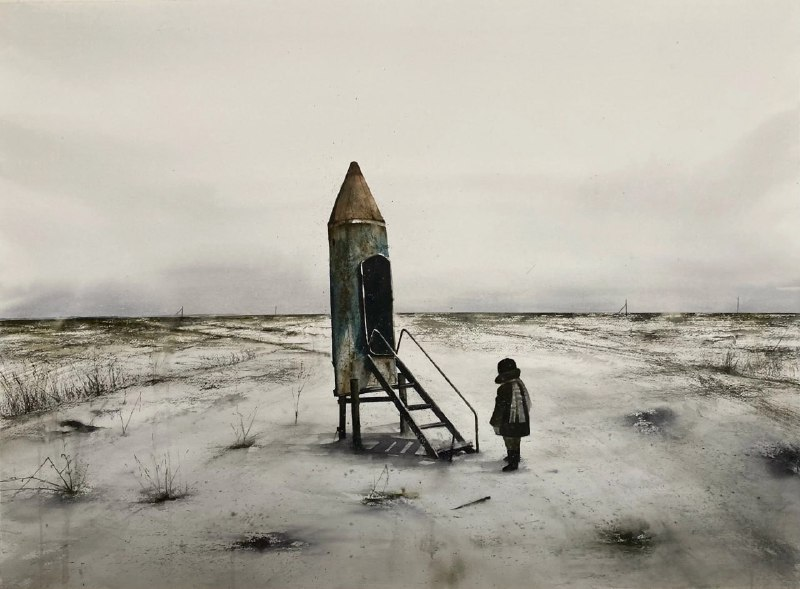

Ният…

Ният…
Банда Аллоҳдан нимаики сўраса мукаммал ихлос, тўлиқ ишонч ва умид билан сўраб ният қилиши зарур.
Аллоҳ банданинг қўлини ҳаргиз қуруқ қайтармайди. Ҳатто банданинг қўлини қуруқ қайтаришдан ҳаё қилади. Бунга ҳеч қандай шак шубҳа ва далил шарт эмас!!!
Лекин келинг барибир бир тафаккур қилиб кўрайлик…
Биз бандалар иҳлос тугул, кўпинча қуруқ дуо қилиб, суст иҳлос билан бепарво ният қилиб қўямиз холос.
Шу лаҳзада бир он тин олиб бир ўйлаб кўринг!!! Ҳозирги ҳолатингизни адолат ила сарҳисоб қилинг, атрофингизга қаранг.
Тан олинг!!! Ахир шу кунгача аввалги барча ният ва дуоларингиз, сўровларингиз тўла тўкис ижобат бўлиб улгурди, ундан ташқари сўрамаган афзалликларингиз бонус сифатида сизга берилди. Буни кузатиб тан олмасдик учун жуда тубан аҳволда бўлиши керак инсон.
Шу ҳақиқатни ҳам тан олмаймиз, ёки тан олгимиз келмайди. Ресторанда қорни тўйиб қолган одам яна қўшимча нима буюришни билмай ўтирганидек, биз ҳам нима сўрашни билмаймиз. Дуо қилишни билмаймиз баъзида.
Истиғфор айтишга киришишингиздан аввал, масалани янада чуқур тафаккур этинг, эсланг!!!
Эсласангиз сиз дуода сўзларда, ниятларда хато қилганингизни пайқайсиз, аммо дуойингиз автомат равишда тўғриланиб (ҳатто имло хатоларигача) қалбингиздаги асл дуо ижобат бўлганини ва ҳаммасига эришганингизни сезасиз ва тушуниб етасиз.
Шундай экан, дуо қилишни ўрганайлик, ниятларга эҳтиёт бўлайлик, дуо ижобати шартларини ўрганайлик, амалини бажарайлик ва сўрайлик!
Муборак ойда Аллоҳ билан банда ўртасида тўсиқ йўқ бўлган фурсатларда дуо аҳамиятини англашимиз кундек равшан.
Мўминнинг қуроли унинг дуосидир!
“Ибодатларингиз энг мақбул ибодатлар қаторида тўла-тўкис қабул бўлсин!”